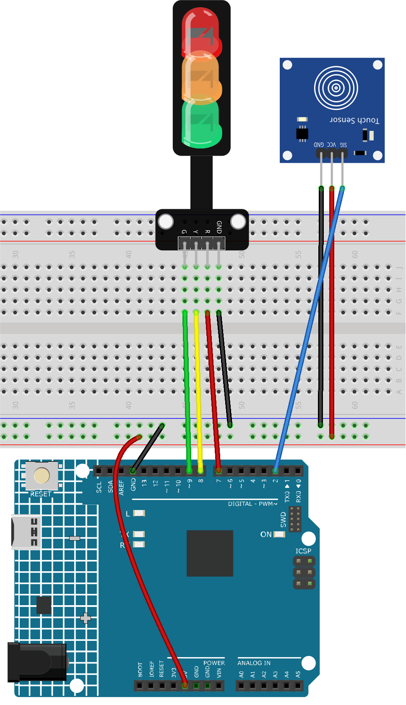

Bemerkung
Hallo und willkommen in der SunFounder Raspberry Pi & Arduino & ESP32 Enthusiasten-Gemeinschaft auf Facebook! Tauchen Sie tiefer ein in die Welt von Raspberry Pi, Arduino und ESP32 mit anderen Enthusiasten.
Warum beitreten?
Expertenunterstützung: Lösen Sie Nachverkaufsprobleme und technische Herausforderungen mit Hilfe unserer Gemeinschaft und unseres Teams.
Lernen & Teilen: Tauschen Sie Tipps und Anleitungen aus, um Ihre Fähigkeiten zu verbessern.
Exklusive Vorschauen: Erhalten Sie frühzeitigen Zugang zu neuen Produktankündigungen und exklusiven Einblicken.
Spezialrabatte: Genießen Sie exklusive Rabatte auf unsere neuesten Produkte.
Festliche Aktionen und Gewinnspiele: Nehmen Sie an Gewinnspielen und Feiertagsaktionen teil.
👉 Sind Sie bereit, mit uns zu erkunden und zu erschaffen? Klicken Sie auf [hier] und treten Sie heute bei!
Berührungsaktivierte Ampel
Das Projekt beinhaltet die Erstellung einer einfachen Ampelsteuerung mit einem Berührungssensor und einem Ampel-LED-Modul. Wird der Sensor berührt, durchläuft das LED-Modul folgende Sequenz: Rot -> Gelb -> Grün.
1. Schaltungsaufbau


2. Code
Öffnen Sie die Datei
08-Touch_toggle_light.inoim Verzeichnisultimate-sensor-kit\fun_project\08-Touch_toggle_light, oder kopieren Sie diesen Code in die Arduino IDE.
3. Codeerklärung
Dieses Projekt basiert auf einem einfachen Prinzip: Wird eine Berührung am Sensor erkannt, leuchtet die nächste LED in der Sequenz (Rot -> Gelb -> Grün) auf. Der aktuelle Status der LEDs wird durch die Variable currentLED verwaltet.
Definition der Pins und Anfangswerte
const int touchSensorPin = 2; // touch sensor pin const int rledPin = 9; // red LED pin const int yledPin = 8; // yellow LED pin const int gledPin = 7; // green LED pin int lastTouchState; // the previous state of touch sensor int currentTouchState; // the current state of touch sensor int currentLED = 0; // current LED 0->Red, 1->Yellow, 2->Green
These lines define the pins that we connect the components to on the Arduino board and initialize the states for touch and LEDs.
setup() Funktion
void setup() { Serial.begin(9600); // initialize serial pinMode(touchSensorPin, INPUT); // configure touch sensor pin as input // set LED pins as outputs pinMode(rledPin, OUTPUT); pinMode(yledPin, OUTPUT); pinMode(gledPin, OUTPUT); currentTouchState = digitalRead(touchSensorPin); }
Diese Funktion wird einmal ausgeführt, wenn der Arduino eingeschaltet oder zurückgesetzt wird. Hier wird der Berührungssensor als Eingang und die LEDs als Ausgänge konfiguriert. Die serielle Kommunikation wird für die Fehlerdiagnose gestartet und der Anfangszustand des Berührungssensors wird gelesen.
loop() Funktion
void loop() { lastTouchState = currentTouchState; // save the last state currentTouchState = digitalRead(touchSensorPin); // read new state if (lastTouchState == LOW && currentTouchState == HIGH) { Serial.println("The sensor is touched"); turnAllLEDsOff(); // Turn off all LEDs // switch on the next LED in sequence switch (currentLED) { case 0: digitalWrite(rledPin, HIGH); currentLED = 1; break; case 1: digitalWrite(yledPin, HIGH); currentLED = 2; break; case 2: digitalWrite(gledPin, HIGH); currentLED = 0; break; } } }
In der Hauptschleife wird der aktuelle Zustand des Berührungssensors gelesen und mit dem vorherigen verglichen. Wird eine Berührung erkannt (Übergang von LOW zu HIGH), werden alle LEDs ausgeschaltet und die nächste in der Sequenz eingeschaltet.
Funktion zum Ausschalten der LEDs
void turnAllLEDsOff() { digitalWrite(rledPin, LOW); digitalWrite(yledPin, LOW); digitalWrite(gledPin, LOW); }
Diese Funktion schaltet alle LEDs aus, indem ihre Pins auf LOW gesetzt werden.